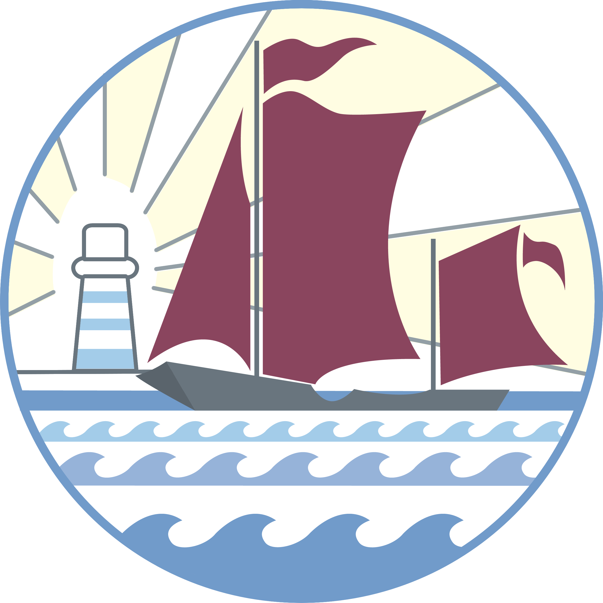

Your bridge into Year 12 — work through it, type your answers (they save automatically), then print it and bring it to your first lesson.

Thamesview School
1
Type your answers. Everything you write is saved to this device automatically.
2
Print or save as PDF. Use the button top-right when you are done.
3
Bring it to lesson one. Your notes will be checked and you will be tested on the reading.
The Specification
Reference
Two exam papers, each worth 40% of your A Level. Your third 20% is the coursework (NEA). Here is how the written papers break down — keep it handy as you read.
Read each pre-reading below and summarise it in your own words in the notes box — no more than 2 sides of A4 each. Your notes save automatically and print with the booklet. You will be tested on these in your first lesson.
Go to page 44 (4.2 Assessment Objectives) of the AQA specification. Read what each Assessment Objective measures, then complete the table — what each AO asks you to do, and its overall weighting in the exam.
"To be a great geographer, you will need to develop the ability to think synoptically — to see the greater overview and how everything we study in Geography links together. Geography is not just about studying people and landscapes; it is also the relationships that exist between people and their environment."
TASK AChanging Places — the nature & importance of place
Not required — but the best geographers are curious. Dip into anything here over the summer to build your wider understanding.
Books & Magazines
›Prisoners of Geography — Tim Marshall. A superb introduction to geopolitics: how physical geography shapes political reality and the decisions of world leaders.
›Geography Review Magazine — subscribe (around £40) for four up-to-date issues with articles directly relevant to your topics.
›Six Degrees — Mark Lynas. A sobering walkthrough of climate impacts as global temperatures rise from 1°C to 6°C.
›Divided — Tim Marshall. The follow-up to Prisoners of Geography: why the world is putting up barriers. Very relevant to Brexit, the US and pandemic-era politics.
Podcasts
›Costing the Earth (BBC) — a wide range of geographical issues: climate change, carbon, urban greening, deforestation, alternative power, plastics and more.
›RGS — Ask the Expert — Royal Geographical Society podcasts keeping you up to date with the latest geographical research. Pick the ones that interest you.